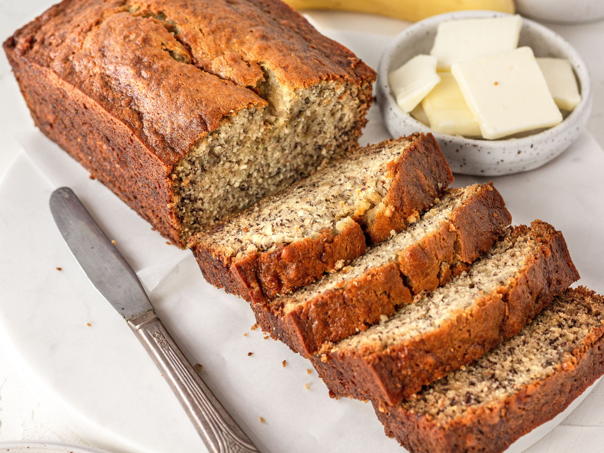

Banana Bread

Banana bread is a quickbread, meaning that it relies on chemical leveners to make it rise, as opposed to tradional yeast breads. Banana bread is commonly served in a loaf form, but could easily be made into muffins as muffins are also quickbreads. Banana bread is a soft, moist bread with a sweet flavor. It's commonly flavored by brown sugar, cinnamon, nutmeg and the titular ingredient, bananas. Frozen bananas are commonly used due to their longer lifespan and ability to maintain peak ripeness.
Ingredients
- 2-3 ripe bananas, 1.5 cup when mashed
- 75 grams butter
- 1/2 tsp baking soda
- 1 pinch salt
- 150 grams sugar, 100 grams if less sweet, 200 if more sweetness desired
- 1 large egg, beaten
- 1 teaspoon vanilla extract
- 205 grams all purpose flour
Method
- Preheat oven to 350 degrees fahrenheit, rub an 8x4 inch loaf pan with butter and dust with flour.
- Mash bananas until smooth.
- Mix flour, salt and baking powder in seperate bowl.
- Beat sugar and butter until smooth and fluffy, add egg and vanilla.
- Add 1/2 of the dry ingredients and mix, add remaining half and mix until just combined.
- Pour batter into prepared loaf pan.
- Bake for 55-65 minutes until a cake tester or knife inserted into the center comes out with sparse moist crumbs stuck to it.
- Let loaf cool completely before removing from loaf pan.
- Slice and serve, store in fridge for up to 5 days or freeze for longer.